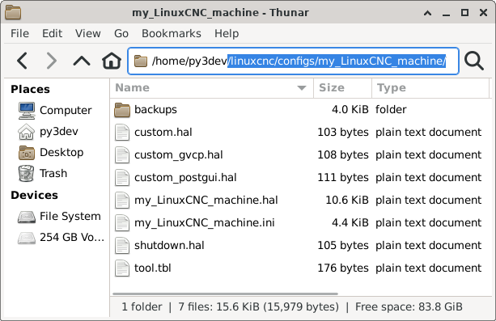
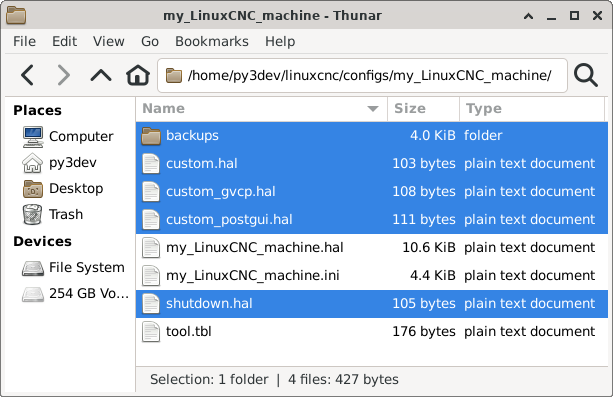
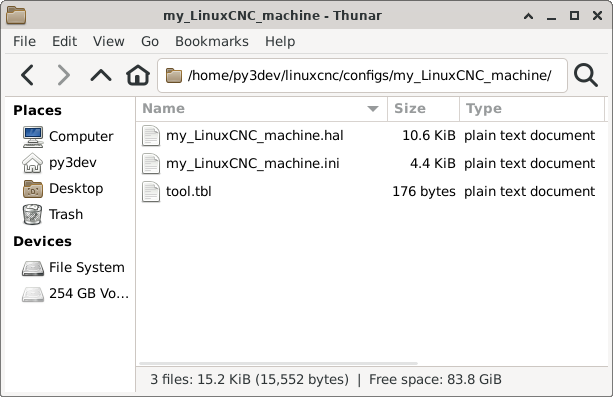
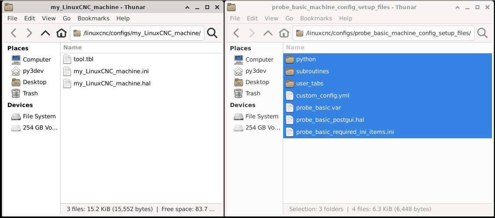
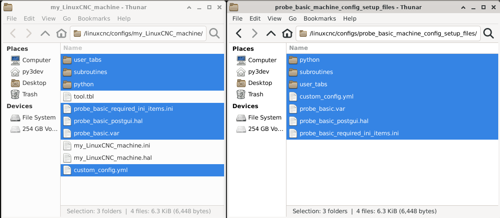
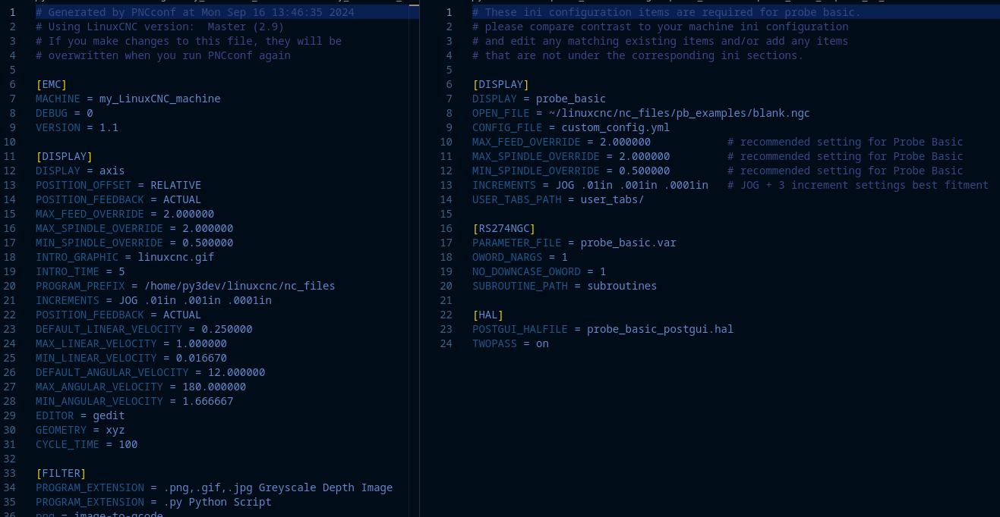
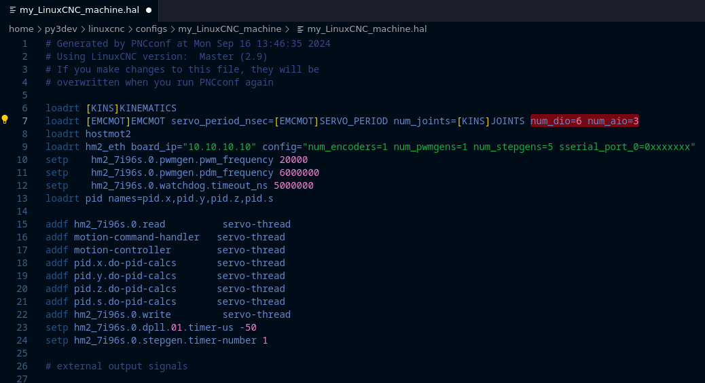
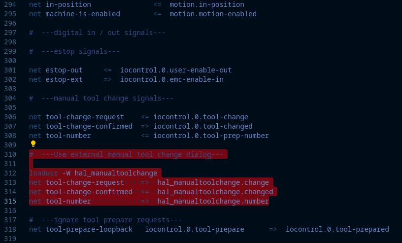

Machine Configuration (INI, HAL, Files)
Creating a working Machine Configuration for Probe Basic
Probe Basic uses some different methods to offer its feature-rich user experience, which requires customized files and settings inside the HAL and INI files to function properly. Below is a guide to help create a working machine configuration for Probe Basic. This guide assumes a basic installation with manual tool changes. A future document will be available for more complex configurations with ATC and Coolant Cannon functionality.
Step 1: Create a basic configuration
Create a configuration for your machine using Pncconf or mesact/mesact2 from the LinuxCNC menu in the applications drop-down in the upper menu bar. In this example, we are using Pncconf.
It is recommended to use the Axis GUI display for this initial build.
Have your machine’s wiring schematic premade to make filling in the required information fast, easy, and accurate in Pncconf.
After completing the Pncconf configuration builder and creating a new machine configuration saved in the LinuxCNC config directory, start LinuxCNC using your new config to verify there are no errors.
Test the machine to verify the base functionality is correct (e.g., jogging, spindle function, axis motion).
Once completed and found to function correctly, proceed to step 2.
Step 2: Copy required files
In the LinuxCNC config folder, locate your new config folder and the “probe_basic_machine_config_setup_files” folder.
Open two folder windows on the desktop: the new Pncconf folder created for your machine and the probe_basic_machine_config_setup_files folder.
Clean up the Pncconf folder by removing unneeded files (see images below for reference).
Copy the required files from the probe_basic_machine_config_setup_files folder to the Pncconf config folder.
*the latest DEVELOP version requires the “user_buttons” folder to be copied over also (not shown in pics below)!*
As built pncconfig folder

Unneeded pncconfig files highlighted

Cleaned up pncconfig folder

Files to be Copied from probe_basic_machine_config_setup_files folder

Files Copied to pncconfig folder

Step 3: Edit INI files
Open the Pncconf “my_LinuxCNC_machine.ini” file side by side with the supplied “probe_basic_required_ini_items.ini” file in a text editor.
Integrate the lines from “probe_basic_required_ini_items.ini” into your existing file: - If a line is present in your machine file, use the Probe Basic settings for that line. - If a line is not in your machine file, copy it to the appropriate section in “my_LinuxCNC_machine.ini”.
Note that only ONE postgui HAL file can be called. Add any additional items to the existing probe_basic_postgui.hal file.
Save the file and delete the “probe_basic_required_ini_items.ini” file from the folder.
Required ini file items for Probe Basic
[DISPLAY] DISPLAY = probe_basic OPEN_FILE = ~/linuxcnc/nc_files/pb_examples/blank.ngc CONFIG_FILE = custom_config.yml MAX_FEED_OVERRIDE = 2.000000 # Recommended Setting for Probe Basic MAX_SPINDLE_OVERRIDE = 2.000000 # Recommended Setting for Probe Basic MIN_SPINDLE_OVERRIDE = 0.500000 # Recommended Setting for Probe Basic INCREMENTS = JOG .01in .001in .0001in # REQUIRED Setting for Probe Basic USER_TABS_PATH = user_tabs/ # REQUIRED Setting for Probe Basic USER_BUTTONS_PATH = user_buttons/ # REQUIRED Setting for Probe Basic [RS274NGC] RS274NGC_STARTUP_CODE = F10 S300 G20 G17 G40 G49 G54 G64 P0.001 G80 G90 G91.1 G92.1 G94 G97 G98 PARAMETER_FILE = linuxcnc.var OWORD_NARGS = 1 NO_DOWNCASE_OWORD = 1 SUBROUTINE_PATH = subroutines [HAL] POSTGUI_HALFILE = hallib/probe_basic_postgui.hal TWOPASS = on
Step 4: Modify Post Gui Hal File
Modify the following lines by commenting them out, they are used for testing in probe basic sim only and will error in the real machine configs. the spindle feedback line can be used if it is setup in the main hal and the hardware is on the machine to provide a spindle speed input to linuxcnc.
loadrt time loadrt not addf time.0 servo-thread addf not.0 servo-thread net prog-running not.0.in <= halui.program.is-idle net prog-paused halui.program.is-paused => time.0.pause net cycle-timer time.0.start <= not.0.out net cycle-seconds qtpyvcp.timerseconds.in <= time.0.seconds net cycle-minutes qtpyvcp.timerminutes.in <= time.0.minutes net cycle-hours qtpyvcp.timerhours.in <= time.0.hours # *** Time items required for Probe Basic to run *** # ---manual tool change signals--- net tool-change-request => qtpyvcp_manualtoolchange.change net tool-change-confirmed <= qtpyvcp_manualtoolchange.changed net tool-number => qtpyvcp_manualtoolchange.number # *** Probe graphic simulation trigger push probe tip *** # net probe-in => qtpyvcp.probe-in.out <----comment this line out> net probe-in <= qtpyvcp.probe-led.on # *** Set line below for actual spindle readout from your hal file *** # net spindle-rpm-filtered scale_to_rpm.out => qtpyvcp.spindle-encoder-rpm.in <----comment this line out>
Step 5: Modify HAL file
Add digital and analog IO to the HAL file by modifying the following line:
loadrt [EMCMOT]EMCMOT servo_period_nsec=[EMCMOT]SERVO_PERIOD num_joints=[KINS]JOINTSAdd this to the end of the line:
num_dio=6 num_aio=3The finished edit should look like this:
loadrt [EMCMOT]EMCMOT servo_period_nsec=[EMCMOT]SERVO_PERIOD num_joints=[KINS]JOINTS num_dio=6 num_aio=3
Remove the red highlighted manual tool change dialog section from the bottom of the hal file as shown in the image below. Probe basic uses its own built in dialog for manual tool changes which give the user better tool information and matches the ui visual theme more appropriately.

Launching Probe Basic
Under the CNC section of the drop-down applications menu, find your machine configuration and select it to launch.
Check the box at the bottom of the launch window to create a desktop icon for easier starts.
To set the Probe Basic icon: - Right-click the desktop launcher and select “edit launcher” - Click the current icon image, this will open the icon folder - Find and select the icon named “probe_basic_mill”
You should now be ready to use Probe Basic with your machine configuration.